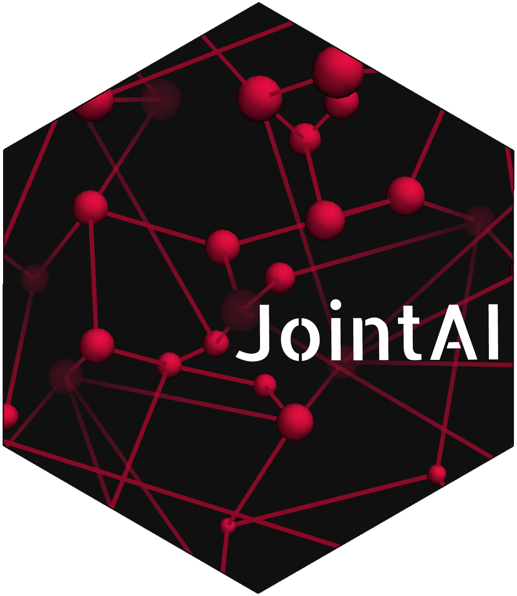

Transform random effects and their covariance matrices back
Source:R/scaling.R
rescale_ranefs.RdIn JAGS, the random effects b of a grouping level enter the linear
predictor as sum_j b_j * (z_j - c_j) / s_j, with z_1 = 1 (random
intercept) and the random-slope variables z_j, each centred and scaled
separately. Written as a function of the original z, this gives the random
effects on the original scale:
Arguments
- rescaled
MCMC sample (matrix) in which the coefficients are already transformed back (
rescale_coefs()).- MCMC
MCMC sample of one chain on the scale used in JAGS (
mcmcobject or matrix).- coefs
data.framewith one row per regression coefficient (do.call(rbind, get_coef_names(info_list))); used to find the coefficients in the means of the random effects.- scale_pars
data.frameof scaling parameters (columnscenterandscale, one row per design-matrix column, named by the column), with centre 0 and scale 1 for columns that are not scaled.- info_list
list with the model information of each sub-model (
get_model_info()).- data_list
data list passed to JAGS (for the names of design-matrix columns).
- groups
list of grouping information (
Mlist$groups; for the number of groups per level, and to find the rows of covariates per group).
Details
Aundoes the scaling of the random slopes; the centring is constant within a group and moves to the random intercept (ranef_transformation()).delta: with hierarchical centring, the means of the random effects contain fixed effects. These are transformed back separately (rescale_coefs(), e.g. the intercept takes the centring of all covariates);deltakeepsbconsistent with them (ranef_shift()).
A does not need the data, so the random effects are transformed back
also when a random-slope variable has missing values. delta usually does
not need the data either. If it depends on covariates (see
ranef_covariate_shift()), the values of each group are used: observed or,
if missing, imputed values (if they were monitored). Without them, the
random effects of that group are set to NA, with a warning.
The random effects are transformed per "block": the random effects that
share one covariance matrix (get_ranef_blocks()). Usually, a block holds
the random effects of one outcome at one grouping level; with
rd_vcov = "full", it holds those of several outcomes, and A then has one
submatrix on the diagonal per outcome (zero elsewhere).